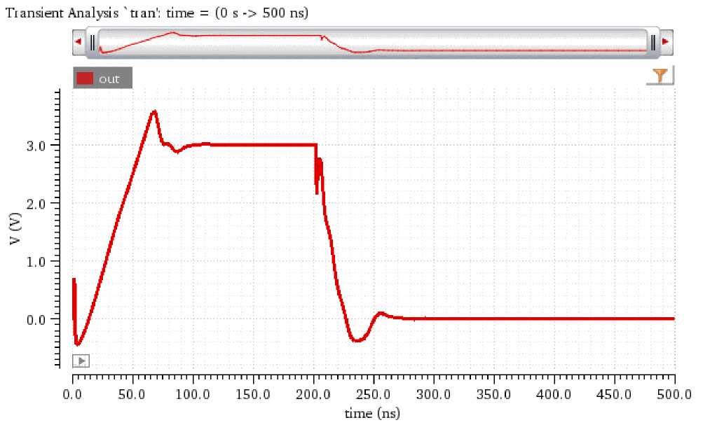
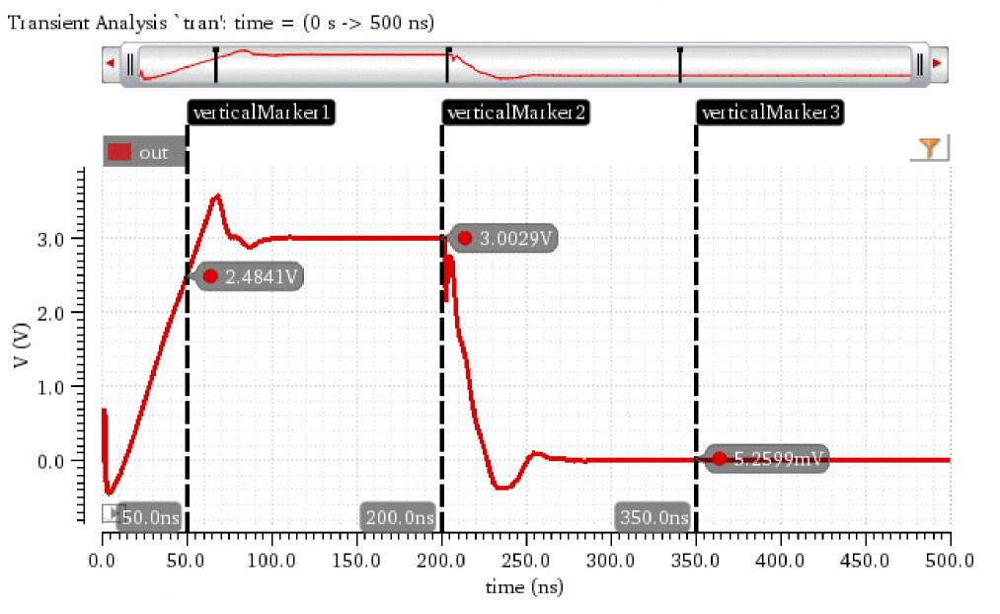

awvPlaceXMarker
awvPlaceXMarker(w_windowID n_xLoc[?labelt_label] [?subwindowx_subwindow] ) =>t_markerID/nil
Description
Places a vertical marker at the specified x coordinate in the specified graph window.
Arguments
Value Returned
|
The vertical marker cannot be placed on the trace because of an error. |
Examples
The following example creates a Waveform window and returns its window ID.
awvCreatePlotWindow()
=> window:3
The following example opens simulation results stored in the specified directory.
openResults("/servers/user/design/ampsim.raw")
=> "/servers/user/design/ampsim.raw"
The following example plots signal out from the tran-tran result of the results directory ampsim.raw.
plot(v("out" ?result "tran-tran") ?expr "out")
=> t

The following examples apply vertical markers on trace out at x=50ns, x=200ns, and x=350ns with labels verticalMarker1, verticalMarker2, and verticalMarker3 in subwindow 1 of the Waveform window you created using awvCreatePlotWindow.
awvPlaceXMarker(window(3) 50ns ?label "verticalMarker1" ?subwindow 1)
=> "vertMarker[1.1.1]"
awvPlaceXMarker(window(3) 200ns ?label "verticalMarker2" ?subwindow 1)
=> "vertMarker[1.1.2]"
awvPlaceXMarker(window(3) 350ns ?label "verticalMarker3" ?subwindow 1)
=> "vertMarker[1.1.3]"

Return to top